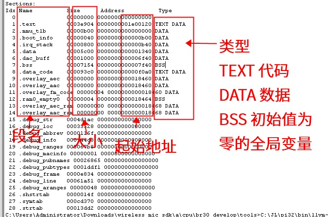
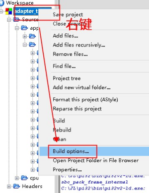
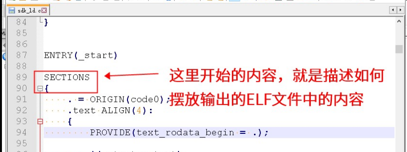
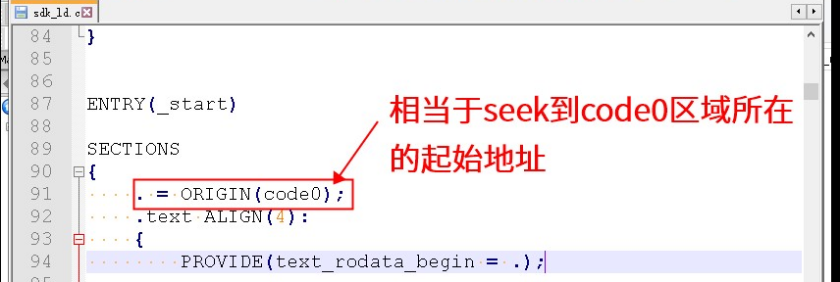

4.1.7.1. 查看总体情况（即每个段的大小）
在编译链接后，会调用后处理脚本。这个脚本中，会利用 objdump -h 输出链接生成的ELF文件的段的信息。例如：

图1
其中，图1中的命令：C:\JL\pi32\bin\llvm-objdump.exe -section-headers sdk.elf 就是生成的命令。
4.1.7.1.1. 如何解读build log输出
框中的含义如下：

注意，《段名》指的是SDK在ld脚本中定义的的一些输出段。
这些段一般对应芯片上的区域。
通常来说，.text段一般代表程序所在的区域，.data对应于全局变量所在的区域。
最后一列 Type 列表示的是，对应行的段，包含了哪种类型的数据。其中：
Type |
含义 |
|---|---|
TEXT |
代码 |
DATA |
数据（初始值不全为 0 ） |
BSS |
数据（初始值全为 0 或者 未指定初始值） |
如果某个段既有 TEXT 又有 DATA，则表示这个段中，即放了代码也放了数据。
Note
如果Type列没有对应的内容，则一般对应的段是一些附加信息的段，里面的内容是工具使用的，并不会实际放到设备中运行。
例如，上图中的 .debug_ 开头的段，这些都是一些调试信息，例如每个函数所在的文件位置之类的。
4.1.7.1.2. 和ld文件的对应方式
SDK中可以自行定义段，具体是在ld文件中定义。可以通过下面的方式找到该文件：
我们需要确认链接时候使用的 ld 文件是哪一个：
确认链接时使用的ld文件位置


在链接参数中，找到类似于 -Txxx.ld 的参数，则 xxx.ld 就是使用的 ld 文件。
我们需要确认生成ld文件的原始文件：
确认sdk_ld.c文件的位置
为了可以利用SDK中定义的一些宏，来确定ld文件里面的一些参数。
较新的SDK都会用一个sdk_ld.c的文件，先经过预处理，展开宏之后，生成最终用于链接的ld文件。
我们需要确认一下是否有这样的步骤：
在
pre/post build steps中，找到pre-build steps。并找到类似-o xxx.ld的地方，前面的输入即使sdk_ld.c文件。这里是cpu\br30_develop\sdk_ld.c文件。
打开对应的sdk_ld.c文件如何解读sdk_ld.c文件
找到并打开sdk_ld.c文件，会得到类似如下的内容：





以下是ld文件描述的输出，和实际ELF文件中段的对应关系：

Note
如果不能在右图对应的 ld 脚本中找到左侧的段名，一般有下面几种原因：
可能是 ld 脚本又包含了其它的 ld 脚本（通过
#include或者INCLUDE）确实没有在 ld 脚本里面指定对应的段。这种情况下，链接器会保留原始输入的 .o 或者 .a 文件中的段名。 例如，我们在 .c 文件里面加了一个函数
foo，并用__attribute__((section(".foo")))定义该函数放置到.foo段。 而我们又没有在 ld 脚本里面指定.foo需要输出到哪个输出段。 则链接器最后会生成一个叫做.foo的段，其中的内容就包含了 foo 这个函数。
如果希望知道对应段来自哪里，建议对工程的所有文件（包括源码以及.a文件等），进行字符串搜索，搜索对应的段名